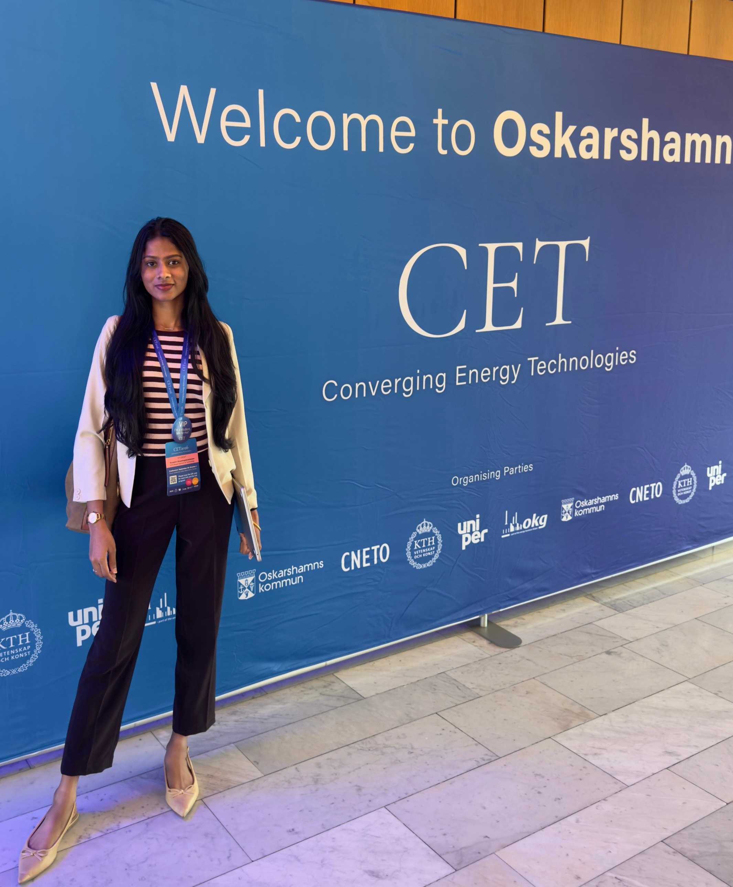

M.Sc. MACHINE DESIGN · KTH ROYAL INSTITUTE OF TECHNOLOGY
Mechanical Design & Simulation
I’m Yuvashri Shanmugasundaram, an M.Sc. Machine Design student at KTH Royal Institute of Technology, with a background in Automobile Engineering.
Across my projects, I’ve worked with CAD and CFD, suspension modelling, sensor-based circuits and the design of a modular test rig. I’m now looking for a master’s thesis where I can build on that experience and work through a practical engineering problem.

Every design begins with an idea. Mine begins with a question.
Mechanical Design · Simulation · Testing · Automotive SystemsAbout me
- MASTER OF SCIENCEM.Sc. Machine Design, KTH
- BACHELOR OF ENGINEERINGAutomobile Engineering, Anna University, MIT Campus
- LOCATIONStockholm, Sweden · Open to relocation
- LANGUAGESEnglish (C1), Tamil (native), Hindi, Swedish (A1)
Why does a design work? What causes it to fail? And how can it be made better?
These are the questions that first drew me to mechanical engineering and continue to shape how I approach it today. I’m interested not just in designing a component, but in understanding how it behaves, where its limitations lie, and how its performance can be improved.
I’m currently pursuing an M.Sc. in Machine Design at KTH Royal Institute of Technology, following my bachelor’s degree in Automobile Engineering from Madras Institute of Technology, Anna University. During my undergraduate studies, I explored different areas of engineering, from investigating gear tooth failures at TAFE to exploring oil dilution detection at DRDO-CVRDE and learning about alternative fuels and dynamometers at ARAI. Each experience gave me a different perspective on how engineering problems can be investigated and solved. My bachelor’s thesis on electric-vehicle aerodynamics allowed me to take this further by using CAD and CFD simulations to study and improve vehicle performance.
At KTH, I’m building on that foundation through advanced machine design projects, including an ongoing project with an industrial partner. As I look ahead to my master’s thesis, I’m keen to take on a challenging engineering problem, apply what I’ve learned, and work alongside experienced engineers to develop a solution that works beyond the drawing board.
FOCUS AREAS
What I work on
My projects have involved CAD modelling, simulation, sensor-based circuit concepts and test planning. I’m interested in understanding how a design behaves, identifying its limitations and using analysis or testing to decide what can be improved.
Mechanical Design & CAD
3D part and assembly modelling, design modifications, geometric constraints and component-level design.
Simulation & Computational Analysis
CFD, suspension and vehicle-dynamics modelling, numerical analysis, and structural analysis through relevant coursework.
Mechatronics & Systems Engineering
Sensor selection, photodiode-based circuits, Arduino-based concepts, system requirements and verification planning.
Testing, Measurement & Validation
Test-rig concepts, measurement planning, experimental methods and comparison of simulation results with available test data.
Projects and Experience
Here are some of the projects I’ve worked on during my studies and internships, from vehicle aerodynamics and suspension modelling to sensor circuits and test-rig design.
Technical skills
Tools and methods I’ve used, grouped by the engineering task they support.
Mechanical Design & CAD
Concept, geometry and component work- SolidWorks
- CATIA V5
- Solid Edge
- 3D modelling
- Component design
Simulation & Dynamics
Modelling and analysis, from projects and coursework- ANSYS CFD
- SolidWorks Flow Simulation
- MATLAB/Simulink
- MSC ADAMS
- Lotus SHARK
- FEM/FEA — upcoming coursework
Mechatronics & Systems Engineering
Sensing, circuits, requirements and verification- Arduino Uno R3
- Photodiode sensing
- Circuit concepts
- Tinkercad
- Polarion ALM
- Requirements engineering
Programming & Data
Programming, analysis and data tools- Python
- Machine-learning fundamentals
- Minitab
- Power BI
- Data analysis
How I work through a problem
Understand the problem
I start by understanding what needs to work, the constraints and what a useful result would look like.
Compare options
I look at possible concepts and decide what needs to be calculated, modelled or measured.
Analyse the design
I use CAD, calculations, simulation or structured analysis to understand how the options behave.
Check and refine
Where test data is available, I compare it with the model and use the findings to decide what to change next.
I aim to connect physical principles, modelling assumptions, simulation results and practical constraints so that engineering decisions can be explained and defended.
Thesis interests, January–June 2027
For my 30 hp master’s thesis from January to June 2027, I’m interested in a practical engineering problem where design, simulation or testing can help answer a specific question. I’m particularly drawn to mechanical components, structural and dynamic behaviour, measurement techniques and automotive systems.
Mechanical Design & Simulation
- Component design
- CAD
- Structural analysis
- Lightweight design
- CFD where relevant
Testing & Measurement
- Test-rig development
- Instrumentation
- Experimental methods
- Model validation
Dynamics & Durability
- Vehicle dynamics
- Vibration
- Fatigue
- Structural behaviour
Automotive & Manufacturing
- Vehicle systems
- Materials
- Manufacturing processes
- Electrification
- Mechatronics
I’m interested in opportunities with automotive and commercial-vehicle manufacturers, component suppliers, engineering consultancies and research teams. I’m based in Stockholm and open to relocating within Sweden.
Have a challenging engineering problem for a master’s thesis?
Let’s discuss an engineering challenge.
I’m looking for an opportunity where I can contribute what I know, learn new things, and grow along with the company. For me, it should be a win-win, where I can add value to the team while building my own skills and experience.
- Name
- Yuvashri Shanmugasundaram
- Role
- M.Sc. Machine Design Student, KTH Royal Institute of Technology
- Location
- Stockholm, Sweden · Open to relocation
- yuvashri@kth.se
- Phone
- +46 76 758 11 79
- View LinkedIn profile
- Availability
- 30 hp master’s thesis, January–June 2027